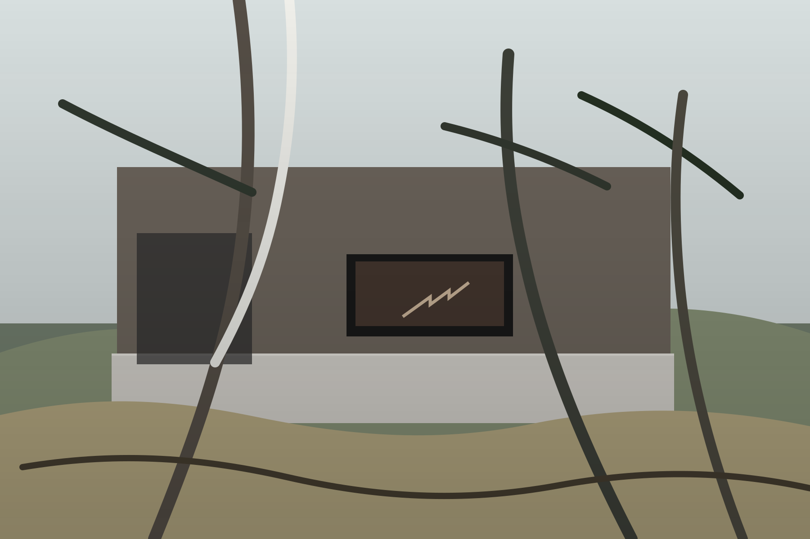

SSA Ingenieria
Construyendo el futuro
Construccion, diseno, supervision, asesoria tecnica especializada y tecnologia aplicada a la gestion de obra.

Vision
Una empresa que combina obra, criterio tecnico y herramientas digitales.
El sitio ahora evita fingir una galeria de proyectos inexistente y en su lugar presenta una experiencia más solida: capacidades, sistema de trabajo, medios demo y una narrativa visual conectada al scroll.
Servicios
Una estructura clara para mostrar lo que SSA hace mejor.


Construccion
Ejecucion con foco en coordinacion real, calidad y continuidad de obra.
- Planificacion y seguimiento
- Control de calidad
- Integracion diseno-ejecucion
Supervision
Monitoreo tecnico para proteger tiempo, costo y cumplimiento.
- Revision de avance
- Verificacion tecnica
- Trazabilidad de decisiones
Diseno y Asesoria Tecnica Especializada
Una capa de criterio formal y tecnico para proyectos complejos o sensibles.
- Definicion de soluciones
- Analisis tecnico
- Soporte especializado
Software a Medida y ERP
Herramientas digitales pensadas para el flujo real de construccion.
- Control de avance
- Gestion documental
- Operacion centralizada
Tecnologia
Una lectura más profesional del componente digital.
En lugar de una galeria vacia, aqui la tecnologia aparece como una capacidad concreta: software a medida, ERP y mejor visibilidad de la operacion constructiva.
Flujos personalizados para equipos, control y seguimiento.
Informacion centralizada para obra, documentos y operacion.
Mejor lectura del proyecto mediante datos y trazabilidad.
Presentacion
Una capa audiovisual para mostrar la empresa con más fuerza.
Este video es una referencia de comportamiento visual. Luego puede reemplazarse por un reel de SSA, un time-lapse de obra o una presentacion institucional real.
Contacto